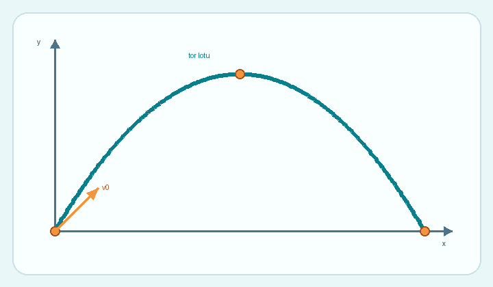

Jak powstaje parabola?
W modelu bez oporu powietrza pozioma składowa prędkości pozostaje stała. Pionowa składowa zmienia się pod wpływem grawitacji.
Położenie w chwili t opisują wzory: x = v₀ cos(α) · t oraz y = v₀ sin(α) · t − ½gt².

Co zmienia tor lotu?
- Prędkość początkowaWiększa wartość zwykle zwiększa zasięg i wysokość.
- Kąt wyrzutuDecyduje o podziale prędkości na kierunki.
- GrawitacjaSilniejsze przyspieszenie skraca lot.
Przykładowe wyniki
| Wielkość | Wartość |
|---|---|
| Czas lotu | 2,88 s |
| Maksymalna wysokość | 10,19 m |
| Zasięg | 40,77 m |
Przeczytaj też opis rzutu ukośnego.